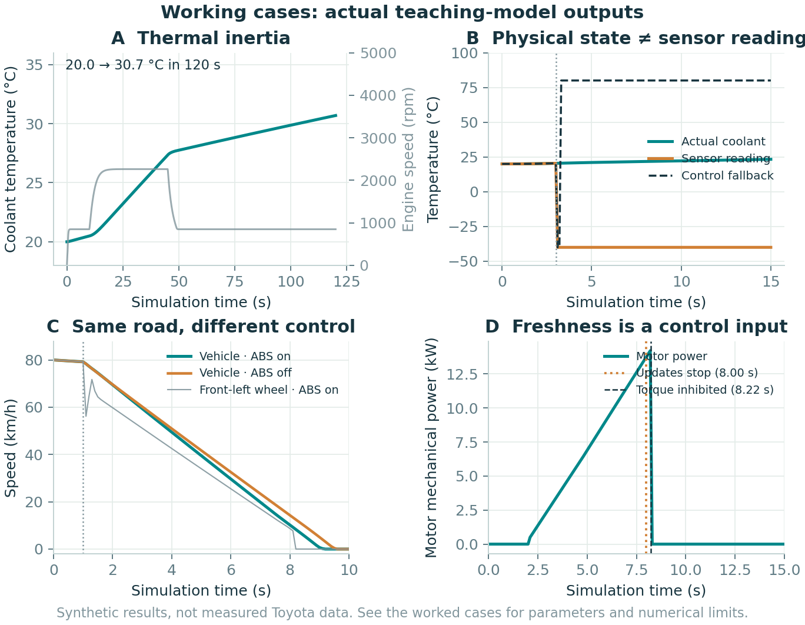

Worked Cases
Worked cases: observations you can reproduce
Version 0.3.0 · 9 November 2026
These results were computed by the supplied simulator, using its
default generic teaching parameters. They are synthetic
results, not Toyota measurements or calibration. The example
files are generated by the same core used by the dashboard and
command-line runner. Each run has a CSV time series, a JSON file
containing parameters, states, events and final diagnostic requests, and
a human-readable CAN transcript under examples/runs/.
From the unpacked project directory, regenerate everything with:
python3 tools/generate_examples.pyTime-series samples are 100 ms apart; the plant step is 2 ms. A controller change at an exact tick can first appear in the following saved sample. Event timestamps are the better source for fault-detection times. A “stop below 0.5 km/h” and a zero-speed sample are deliberately separate summary fields.
1. Start a single engine ECU and follow the heat

Hypothesis: combustion produces torque immediately after cranking, but coolant has thermal inertia. The dyno stand stays stationary even when engine speed rises.
python3 run.py --scenario engine_warmup --output examples/my_warmupThe engine starts from 0 rpm, passes through CRANKING and RUNNING, and reaches a sampled peak of 2263.3 rpm as the script changes accelerator position. At 120 s the actual coolant has risen from 20.0°C to 30.68°C, with 0.05339 L of modeled fuel used. Vehicle speed remains zero because this profile is a stand.
This is partial warm-up. Do not expect operating temperature after every two-minute run. Compare ECU crank speed, mass airflow and coolant PIDs against the physical state. Extend the duration or change the manual load to explore the heat balance; the extra time continues with the script’s final idle input.
2. Disconnect the coolant-temperature sensor
Hypothesis: a sensor reading can be wrong while the physical quantity remains normal; clearing diagnostic memory does not repair that sensor.
python3 run.py --scenario ect_open --output examples/my_ect_faultAt 3.00 s, the ECT circuit becomes open. Its simulated pull-up input
is 5.000 V, with a full-scale 4095 ADC
count and zero branch current. The branch resistance is
null, marked invalid; no finite resistance is reported. The
sensor temperature display is −40°C, with invalid
measurement status. After 200 ms the teaching ECU marks P0118 pending,
uses an 80°C fallback estimate, and applies a 65% torque multiplier. At
3.50 s, P0118 becomes confirmed and the MIL turns on.
The final physical coolant is 23.32°C, while the
reported sensor remains -40°C. These are distinct
signals.
In the final transcript, 01 05 returns
41 05 00; the temperature conversion is 0 − 40 = −40°C.
03 reports P0118, encoded as bytes 01 18. Use
the dashboard’s clear button, continue time, and observe the fault
returning. These 200/500 ms rules are an accelerated lesson, not
regulatory emissions confirmation logic.
Inspect the same cause in the new task workspace
The six task buttons provide a separate interactive setup:
Healthy baseline runs 1 s from a selected 25°C coolant
initial condition, then Open circuit, +0.20
s, +0.30 s, Read DTC, and
Repair & clear expose each transition. This task
begins near 25°C; the scripted ect_open recording above
retains its 20°C initial condition and its fault at 3.00 s.
Choose ECT electrical circuit, then probe the
physical node voltage, ADC count, reported temperature and control
temperature. At exactly 25°C the synthetic 2,500 Ω NTC and 2,200 Ω
pull-up give 5 × 2500 / 4700 = 2.659574 V. The 12-bit ADC
gives count 2178 and reconstructs 2.659341 V. Opening the path separates
true coolant temperature from the invalid sensor report and later 80°C
fallback.
Invalid, substituted and stale finite scope values use dashed segments. Null resistance leaves a gap. Recorded samples are 100 ms apart, so inspect the event timeline for the monitor’s exact transition time. The workspace guide and connector reference explain the five screens, measurement boundaries and illustrative harness mapping. Clearing the code while the input remains open still allows it to return after the teaching debounce.
3. Follow power through EV, hybrid and braking states
Hypothesis: the supervisor changes sources and braking allocation while the same physical vehicle continues moving.
python3 run.py --scenario phev_city --output examples/my_phev_cycleThe DC link precharges before the contactor closes; torque is inhibited during precharge. The first launch is electric, the first braking event recovers energy, and the later high-demand launch also uses the engine. The vehicle reaches 102.00 km/h, stops twice, and ends at zero speed after 60 s. SOC changes from 75.0% to 74.461%; gross battery discharge is 0.16177 kWh, and gross charge is 0.06572 kWh. Gross charge and net SOC change are different quantities because driving and auxiliaries consume energy during the same run.
This is an educational sequence with deliberately visible transitions, not an EPA, WLTP, Toyota, or standardized urban drive cycle. The transmission is a generic parallel-hybrid approximation, not a Prius planetary gearset.
4. Begin with low SOC
Hypothesis: the engine can support propulsion and a charging request when the supervisor enters charge-sustain operation.
python3 run.py --scenario low_soc --output examples/my_low_socThe pack begins at 22.0% SOC and ends at 22.420% after 45 s. The supervisor requests up to 5 kW of generator shaft power; the sampled maximum is 5.00 kW. Mode is CHARGE SUSTAIN during traction. Battery current is negative while net charging, and engine fuel use is 0.09741 L. The narrow run increases SOC by only 0.420 percentage points; it is not a complete battery recharge. Generator output is limited when the battery cannot accept charge.
5. Compare ABS on the same split-friction surface
Hypothesis: per-wheel pressure modulation reduces sustained locking in this specified model. Keep every other input identical for the comparison.
python3 run.py --scenario abs_split_mu --output examples/my_abs
python3 run.py --scenario abs_split_mu --set abs_enabled=false --output examples/my_no_absBoth runs start at 80 km/h, coast for 1 s, then apply 85% braking. Left-road friction is 0.20 and right-road friction is 0.80. The shared first-second coast covers 22.11 m.
| Observation | ABS enabled | ABS disabled |
|---|---|---|
| Total distance from time zero | 110.32 m | 115.51 m |
| Distance after brake command at 1 s | 88.21 m | 93.40 m |
| First saved speed below 0.5 km/h | 9.1 s | 9.5 s |
| ABS active time | 7.07 s | 0.00 s |
Inspect the four slip and pressure traces; with ABS disabled, wheels reach locking slip. These distances apply to this toy tire curve, pressure controller and fixed conditions. They do not establish real-vehicle stopping performance. The associated yaw-brake assistance is reduced-order and omits lateral tire and body-sideslip states.
6. Ask a nearly full battery to accept regeneration
Hypothesis: restricted charge acceptance moves braking work to friction brakes.
python3 run.py --scenario regen_limit --output examples/my_full_pack_braking
python3 run.py --scenario regen_limit --config examples/normal_soc.json --output examples/my_normal_pack_brakingBoth vehicles start at 60 km/h and apply the same 30% brake command after 1 s. Only initial SOC changes: 97.5% versus 75.0%.
| Energy over the 35 s experiment | 97.5% starting SOC | 75.0% starting SOC |
|---|---|---|
| Gross battery charge | 0.00856 kWh | 0.02662 kWh |
| Mechanical regeneration | 0.01157 kWh | 0.03209 kWh |
| Friction-brake dissipation | 0.04335 kWh | 0.02249 kWh |
| Total distance | 120.60 m | 120.60 m |
Charge power tapers between 90% and 98% SOC. Mechanical regeneration exceeds stored battery energy because the motor/inverter conversion is lossy and auxiliaries still consume power. The stopping distances remain similar because friction braking fills the request when regeneration is limited.
7. Remove the BMU heartbeat
Hypothesis: a supervisor must distinguish stale data from a healthy unchanged measurement.
python3 run.py --scenario bmu_timeout --output examples/my_missing_bmuMessages stop at 8.00 s. The last message arrived at 7.90 s; the 20
ms supervisor therefore detects message age greater than 300 ms at
8.22 s. It records the local
BMU_STATUS_TIMEOUT teaching label, inhibits torque, and
opens the traction path. The car continues coasting and ends at
19.76 km/h. A fault does not magically remove kinetic
energy. No generic emissions MIL is asserted for this local network
fault.
8. Force a low cell-voltage input
Hypothesis: persistent out-of-range battery sensing causes a latched traction shutdown rather than continued torque production.
python3 run.py --scenario cell_low --output examples/my_low_cellAt 8.00 s one measured cell channel is forced to 2.30 V. The BMU
threshold is 2.80 V for 200 ms, so shutdown occurs at 8.20
s. Final contactor status is FAULT, and battery current and
traction output are zero. The stored label is
BMU_CELL_UNDERVOLTAGE; it is explicitly a teaching
identifier, not a claimed Toyota trouble code. Ordinary cells are
aggregate pack/96 readings with a nominal spread; this does not model 96
independent cell electrochemistry states. Remove the injection and cycle
ignition to reattempt readiness.
Read the recordings critically
examples/RESULTS.csv and RESULTS.json
provide the comparison values above. Each .trace.txt
contains requests made at the end of its run, not
requests polled continuously throughout the CSV. Thus a healthy
engine-speed response can be zero at the end of a PHEV stop while
earlier records show combustion running.
The battery ledger checks chemical energy = terminal energy + resistive heat. This is a check on the modeled battery equations, not proof of complete vehicle energy closure: precharge resistor/capacitor energy, detailed 12 V loads, lateral motion, full engine maps and several other losses are outside this first model.